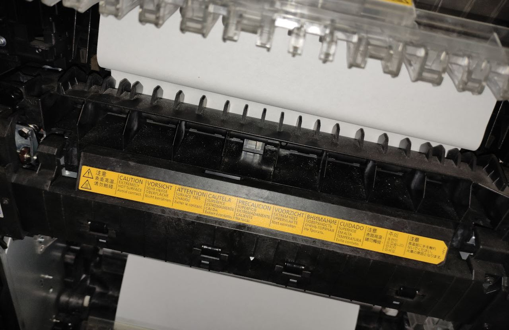

Mis Trabajos
A continuación muestro algunos de mis trabajos realizados en soporte técnico



Hola, soy Anwar Omar Martinez Muñoz me considero una persona curiosa, me gusta leer, ver películas, ir al cine, escuchar música, viajar, y en cuanto a tecnología, soy un entusiasta de ella, por lo cual me gusta siempre experimentar y descubrir como funcionan las cosas.
Actualmente me encuentro cursando el último semestre de la Maestría en TIC's.
Dentro del área de sistemas y soporte técnico, mi labor era realizar mantenimientos a los equipos de cómputo tanto PC's como Laptops, dar soporte técnico a los usuarios de manera personal dentro de la empresa como de igual manera de forma remota usando programas como Anydesk, Microsoft Teams, TeamViewer, aprendí sobre cableado estructurado.
Laboré como Profesor de Regularización nivel primaria para los grados de 2 a 5, elaborando planes de estudio para la enseñanza y aprendizaje de los menores, teniendo en cuenta las necesidades de los niños y el objetivo de aprendizaje de cada uno de ellos, de igual manera intentando que su aprendizaje fuera entretenido para que ellos prestaran mayor atención al trabajo que realizaban.
Me desempeñe como Técnico en Informática Aplicada de Tehuacán, en el cual me desarrolle no solo en lo que es cuestión de computadoras, sino también en la instalación de centros de vídeo vigilancia y monitoreo de estas. Incursione de igual manera en el mantenimiento de consolas de videojuegos, dando soporte mayormente a consolas de Xbox.